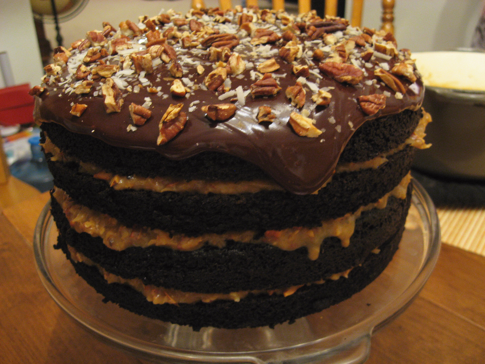

Prepare your own German Chocolate Dump Cake

German Chocolate Cake Recipe
Want to prepare a delicious dessert for your family meal? Here is the recipe for a tasty German Chocolate Dump Cake for you!
Ingredients
- 3 cups toasted pecans, chopped, divided
- 2 cups sweetened flaked coconut
- 2 (2-layer size) package devil's food cake mix
- eggs, oil, and water as specified for the cake mix
- 2 (8 ounce) package cream cheese, softened
- 1 cup butter, melted
- 4 teaspoons vanilla extract
- ½ teaspoon salt
- 2 cups powdered sugar
- 1 ⅓ cups semisweet chocolate chips
Steps
- Preheat the oven to 350 degrees F (175 degrees C). Grease a 9x13-inch baking pan.
- Sprinkle 1 cup pecans and coconut in the prepared pan.
- Prepare cake mix according to package directions. Pour batter over coconut and pecans in the pan.
- Beat cream cheese with an electric mixer in a bowl until smooth, about 30 seconds. Beat in melted butter, vanilla and salt. Beat in powdered sugar until smooth. Stir in chocolate chips and remaining 2/3 cup pecans.
- Drop spoonfuls of the cream cheese mixture over the cake batter. Swirl the cream cheese mixture and cake batter together using a butter knife or thin spatula.
- Bake in the preheated oven until a toothpick inserted in the center comes out clean, 32 to 38 minutes.
- Cool completely on a wire rack.